Real-time monitoring of physical and virtual resources (Server, Network, GPU, Cloud).
Profile code performance and track errors during development.
Observability for Container / Kubernetes orchestration and microservices.
Optimize database performance and manage network traffic.
Optimize frontend performance and ensure user satisfaction.
AI-driven anomaly detection and automated insights.
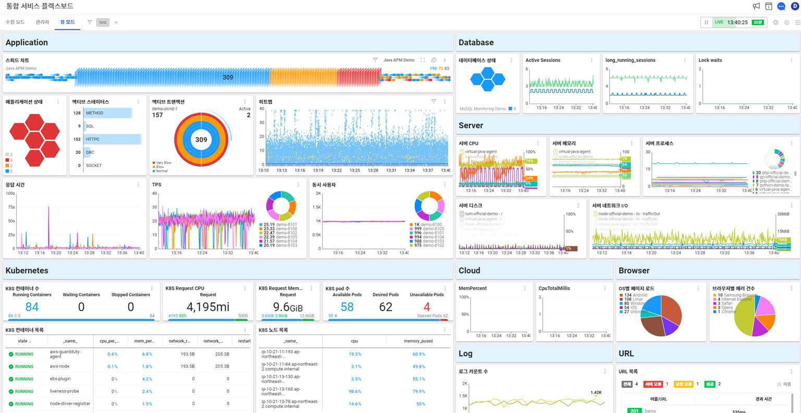
Isolate faults immediately to minimize service interruption.
Foster DevOps alignment to speed up feature delivery and stability.
Customizable views tailored for Dev, Ops, and Business roles sharing the same data lake.
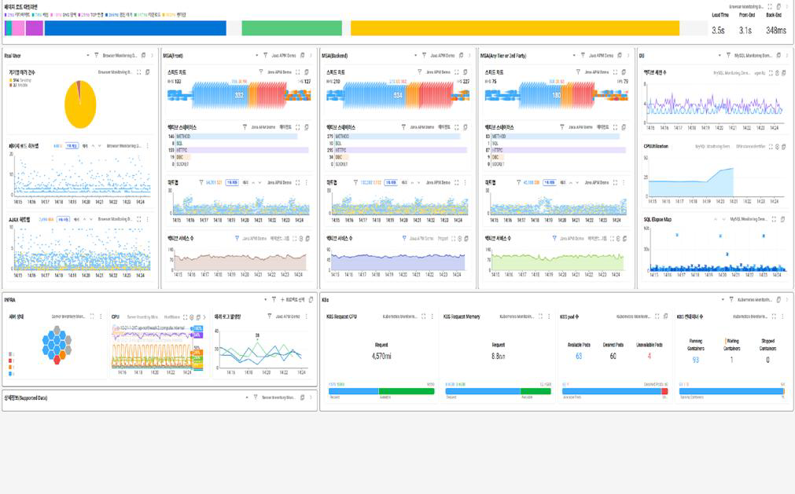
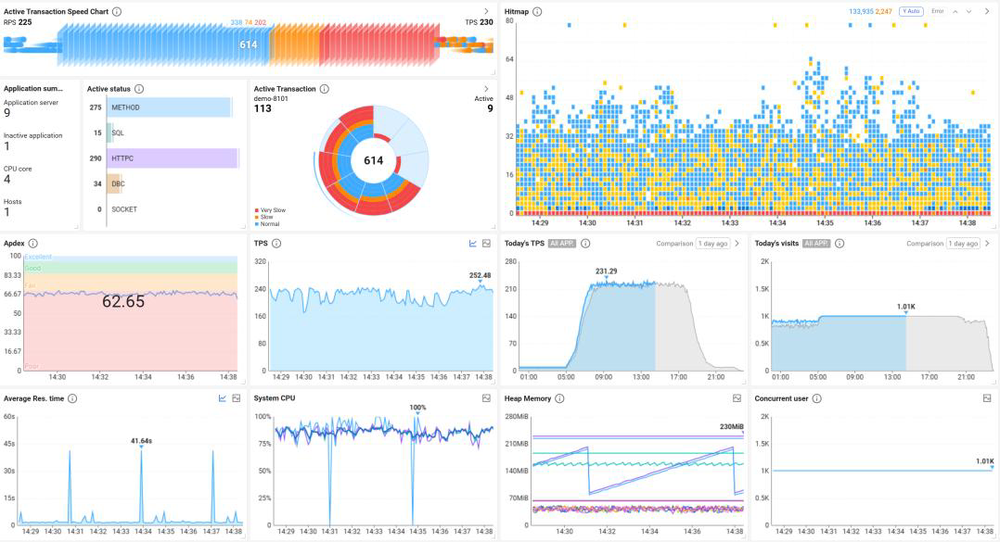
| Active Status | Details |
|---|---|
| METHOD | Processing in application code |
| SQL | Executing database query |
| HTTPC | Waiting for external API response |
| DBC | Waiting for DB connection pool |
| SOCKET | Network socket I/O wait |
Observe active requests in real-time to prevent service hang-ups.
Visualize transaction distribution to spot load imbalances.
One-click inspection of stuck threads (SQL / HTTP) to ensure seamless user experience.
Identify bottleneck sections by categorizing active transactions into five distinct states.
Pinpoint latency drivers through monitoring spikes.
Visualize delay distribution on the dashboard to accelerate incident response.
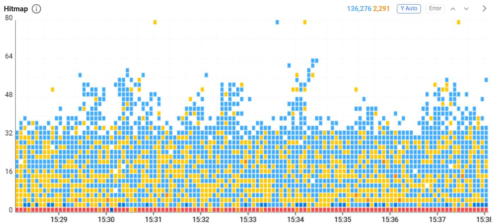
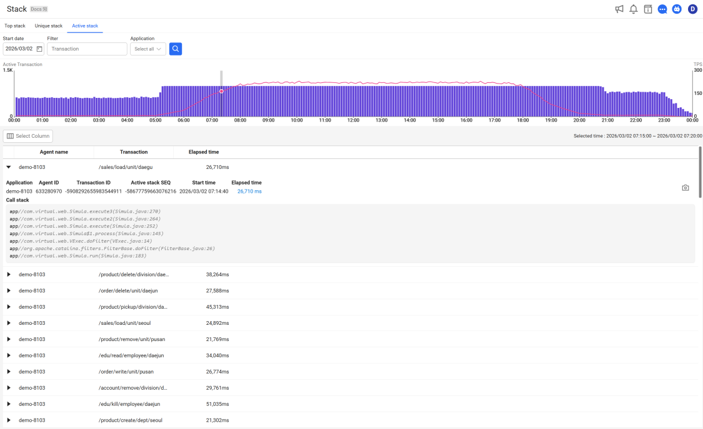
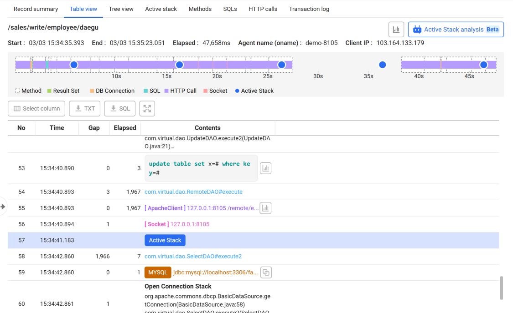
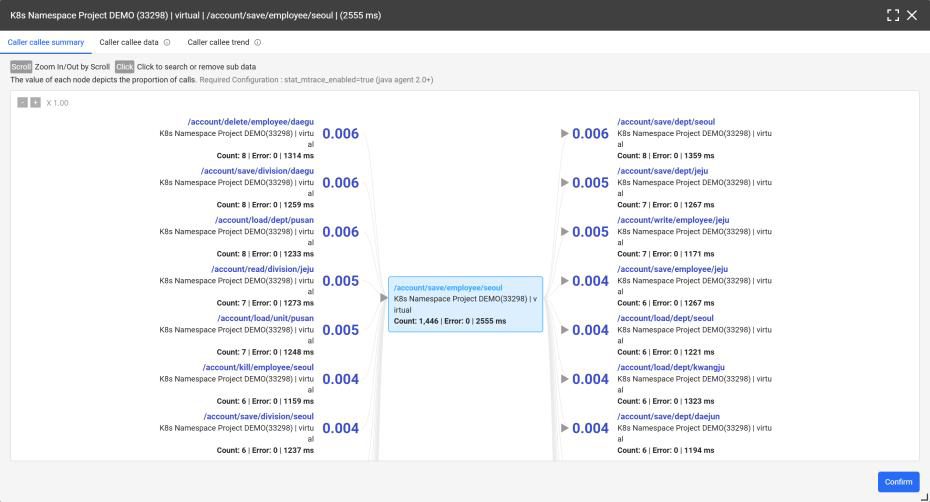
| Resource | Key Metrics |
|---|---|
| CPU | Usage, Idle, I/O Wait, Steal, IRQ, SOFTIRQ, Load |
| Memory | Usage (%), Usage (bytes), Free, Available, SWAP Used (%), SWAP Used (bytes), Page Faults |
| Network | Traffic In/Out, Packet In/Out, Error In/Out, Dropped In/Out |
| Disk | I/O (%), IOPS Read/Write, Bps Read/Write, Used Space (%), Used Space (bytes), Free Space (%), Queue Length, Inode (Linux) |
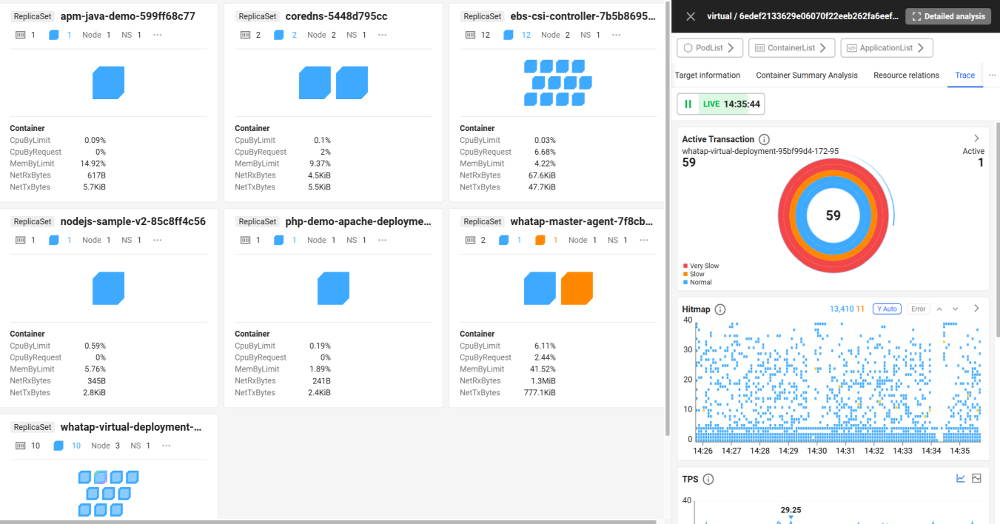
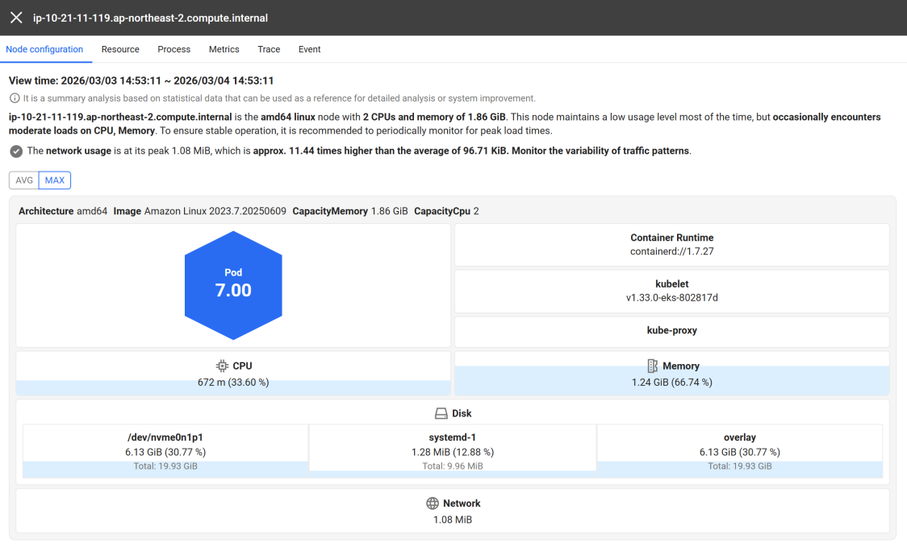
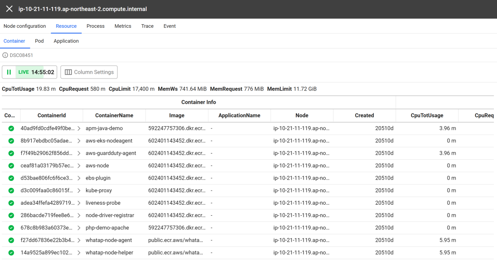
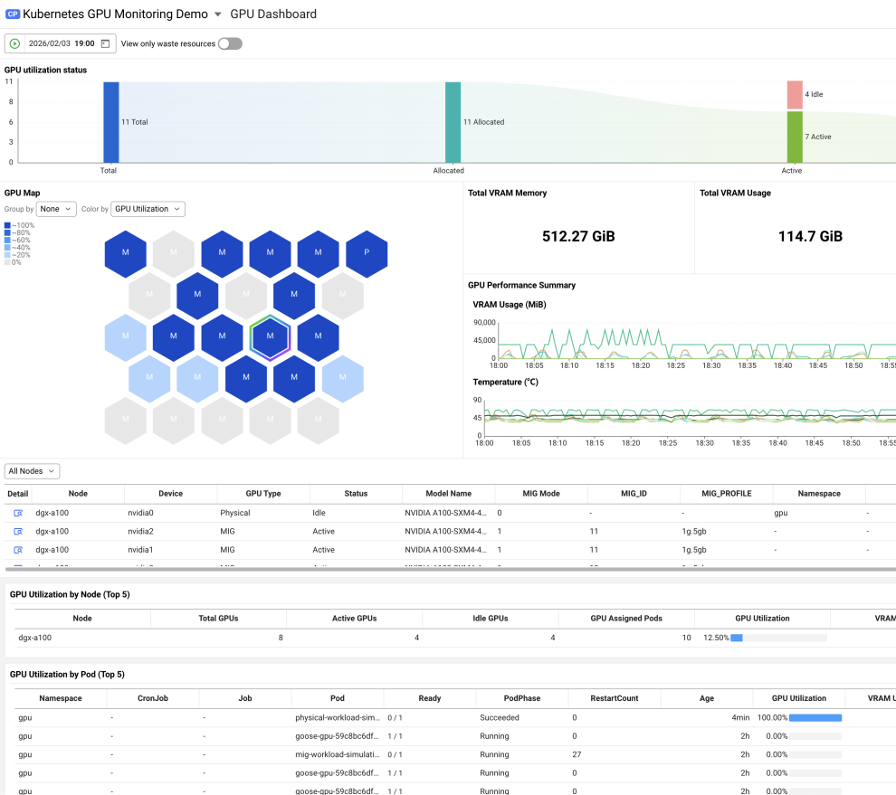
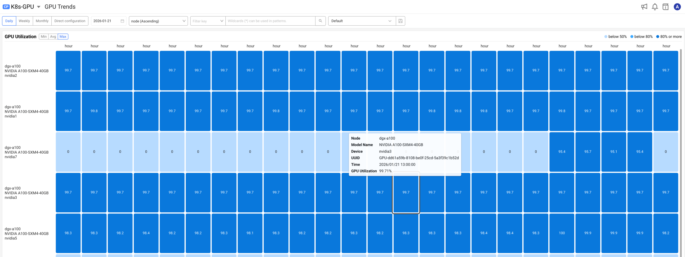
Visualize port Up/Down status and utilization per device.
Access performance metrics for specific interfaces.
Analyze anomaly patterns and support capacity planning.
Interface-specific policies for faster RCA and fault prevention.
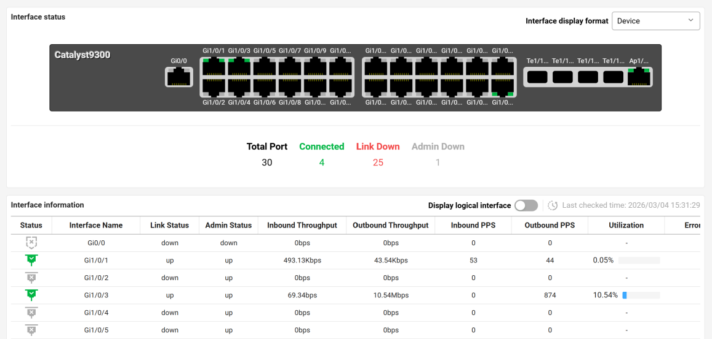
| Stage | Description | Stage | Description |
|---|---|---|---|
| Re-direct | Time spent on page redirection | Download | Time to download resources from server |
| Caching | Time to retrieve cached resources | Rendering | Time to render and complete page load |
| DNS Lookup | Time to resolve the website domains | Load Time | Total time to fully load the page |
| TCP Connect | Time for the TCP handshake process | Front-End | Time for initial web page rendering |
| Response Wait | Time until first byte (TTFB) | Back-End | Time from request to start of download |
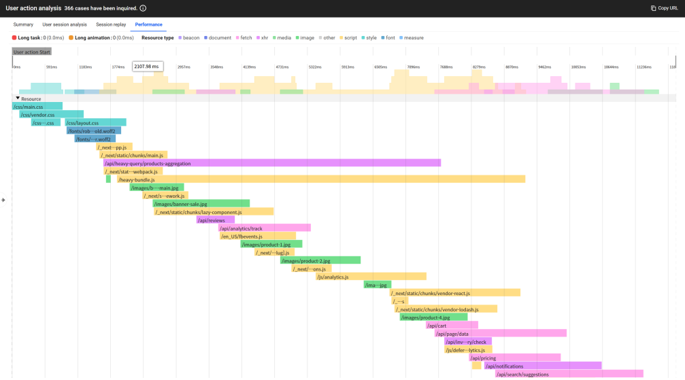
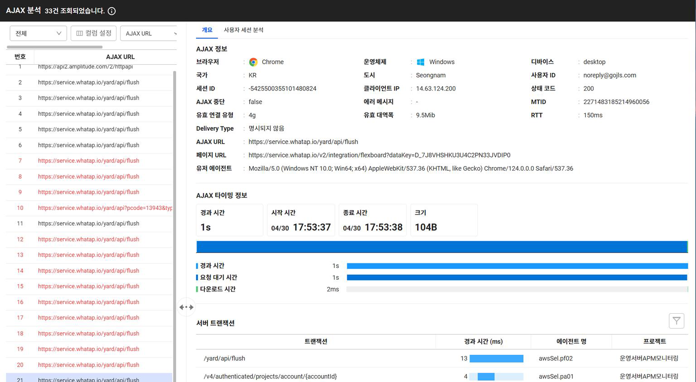
With over a decade of continuous innovation, WhaTap Labs marks a leading player in the monitoring market.
A unified platform covering GPU, Server, Kubernetes, Application, DB — delivering full-stack visibility.
Powered by proprietary AI technologies to automate operations and anticipate issues.
| Company | WhaTap Labs Inc. |
| Founded | July 2015 |
| CEO | Dongin Lee |
| Employees | 90 (as of Dec. 12) |
| Business | Enterprise Software (SaaS Monitoring) |
| Website | www.whatap.io |
| Contact | Tel. +82-2-565-1803 / Email. support@whatap.io |
| Address | 13F, Suite 1303, 17 Seocho-daero 77-gil, Seocho-gu, Seoul 06614, Republic of Korea |
Named as a Representative Vendor in the Gartner 2025 Market Guide for Infrastructure Monitoring Tools — selected and recognized for proven competitiveness.
Certified across ISO 27001, 27017, 27018, and 27701, demonstrating global-standard information security.
Kubernetes Certified Service Provider (KCSP), CSAP, AWS Qualified Software, and CSA STAR (Level 1: Self-Assessment).
Good Software (GS) 1st Grade and Korea Innovative Product designation.